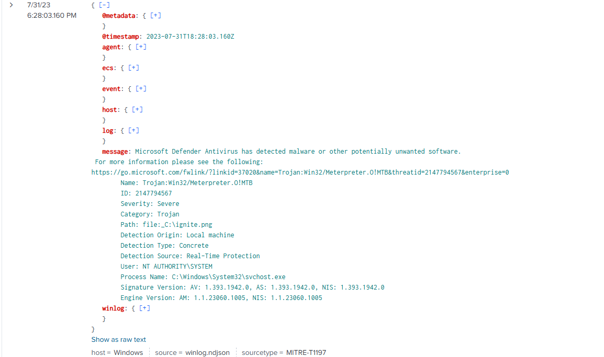
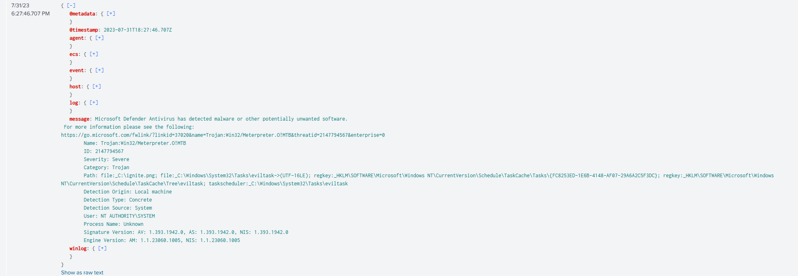
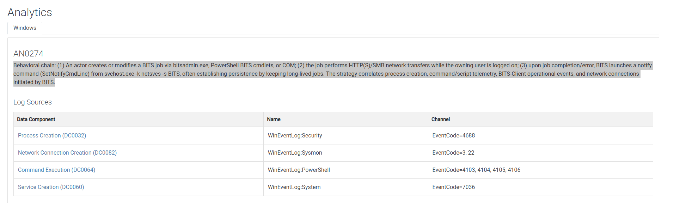
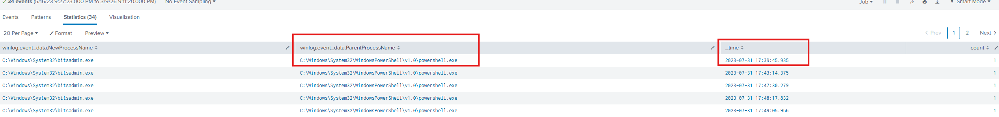
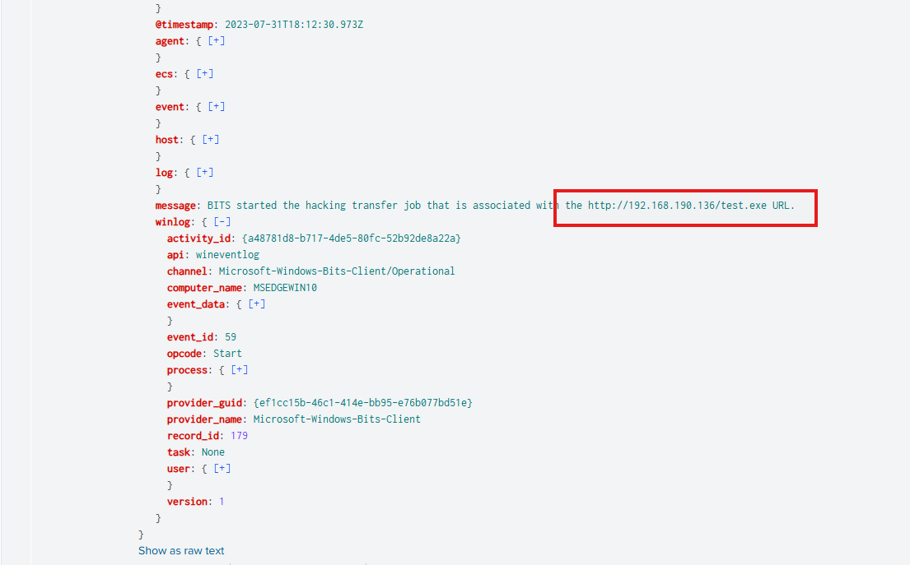
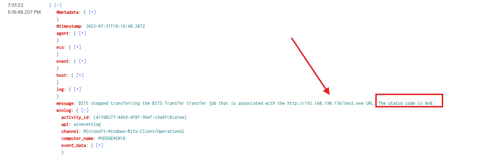

Scenario:
Adversaries can exploit BITS (Background Intelligent Transfer Service) jobs to persistently execute code and carry out various background tasks. BITS is a COM-exposed, low-bandwidth file transfer mechanism used by applications such as updaters and messengers, allowing them to operate in the background without interfering with other networked applications.
In this incident, an employee received multiple alerts from Windows Defender indicating the presence of malicious files on their PC. As you arrive at the scene, your goal is to use SIEM to analyze the event logs from the suspicious machine and determine the nature of the events.
Executive Summary
This investigation analyzed Windows event logs and Microsoft Defender alerts to determine the cause of malware detections on host WIN-2FOSVI0LSCF. Analysis revealed that the attacker deployed a Meterpreter backdoor generated using the Metasploit Framework, which triggered multiple Defender detections (Event ID 1116). The adversary attempted to establish persistence by creating a malicious scheduled task named eviltask. Further investigation identified the abuse of the legitimate Windows utility bitsadmin.exe, a known LOLBAS, to create BITS jobs that downloaded a malicious payload from the attacker-controlled server 192.168.190.136. Process creation logs show that PowerShell spawned bitsadmin.exe, with the first execution occurring on 2023-07-31 at 17:39:45.935. BITS operational logs confirm that the payload test.exe was successfully downloaded, with the transfer completing at 2023-07-31 18:16:48.207. Overall, the incident demonstrates how attackers can abuse native Windows services such as BITS to stealthily transfer malware, maintain persistence, and evade traditional detection mechanisms.
Q1:
What is the framework used to create the backdoors?
To identify the framework used to generate the backdoors, I began by analyzing several different event types within the dataset. My initial approach focused on identifying suspicious processes or behaviors that could indicate the framework responsible for the payload generation.
I first reviewed process creation events, network connection logs, and PowerShell script logging events in an attempt to identify unusual processes or command execution that might reveal the framework used by the attacker. However, these event sources did not provide any direct indicators.
Since the initial approach did not yield results, I pivoted to examining Microsoft Defender Antivirus detection events, specifically Event ID 1116, which logs malware detections.
Filtering for these events revealed multiple detections occurring between July 31, 2023, 6:01:30 PM and 6:28:03 PM on the host WIN-2FOSVI0LSCF (IP address 192.168.19.129). The detections identified several files associated with Meterpreter, a well-known payload used in offensive security frameworks.


The presence of Meterpreter strongly indicates that the attacker generated the backdoors using the Metasploit Framework, as Meterpreter is one of its primary post-exploitation payloads.
Q2:
What is the name of the scheduled task that the attacker tried to create?
To identify the scheduled task created by the attacker, I reviewed the Microsoft Defender Antivirus detection events (Event ID 1116) discovered in Question 1.
Within the Defender alert details, the Path field provides information about the malicious artifacts that were detected and blocked. The alert references multiple persistence-related artifacts, including registry entries and a scheduled task file.
The log specifically shows the following entry:
taskscheduler:_C:\Windows\System32\Tasks\eviltask
This indicates that the attacker attempted to create a scheduled task named eviltask located in the Windows Task Scheduler directory.
Scheduled tasks are commonly used by attackers as a persistence mechanism, allowing malicious payloads (such as a Meterpreter backdoor) to execute automatically at scheduled intervals or system startup.
Q3:
What is the LOLBAS used by the malicious actor to move the backdoors to the targeted machine?
To identify the LOLBAS used by the attacker, I analyzed activity related to MITRE ATT&CK technique T1197 – BITS Jobs, which describes how adversaries abuse the Background Intelligent Transfer Service (BITS) to transfer malicious payloads and maintain persistence.
Reviewing the detection guidance for T1197 shows that attackers commonly leverage tools such as bitsadmin.exe, PowerShell BITS cmdlets, or COM objects to create and manage BITS jobs that download or move files across systems.
Searching the environment for activity related to these binaries revealed numerous executions of bitsadmin.exe, indicating that the attacker used this native Windows utility to transfer the backdoor payloads to the target machine.
Because bitsadmin.exe is a legitimate Windows binary that can be abused for malicious purposes, it is classified as a LOLBAS tool.

Q4:
When was the first attempt made by the attacker to execute the LOLBAS?
To determine when the attacker first executed the LOLBAS tool bitsadmin.exe, I analyzed process creation events (Event ID 4688) within the dataset.
I executed the following query to identify executions of bitsadmin.exe and the processes responsible for launching it:
index="mitre-t1197" event.code=4688 bitsadmin.exe
| stats count by winlog.event_data.NewProcessName, winlog.event_data.ParentProcessName, _time
| sort _time
This query lists all instances where bitsadmin.exe was executed, along with the parent process and associated timestamps.

The results show that PowerShell (powershell.exe) was responsible for spawning bitsadmin.exe, indicating that the attacker used PowerShell to initiate the malicious BITS transfer activity.
From the results, the earliest recorded execution occurred at: 2023-07-31 17:39:45.935
Therefore, the first attempt made by the attacker to execute the LOLBAS occurred at 2023-07-31 17:39:45.935 (UTC).
The lab requires the timestamp to be provided in **24-hour format**, which may cause incorrect submissions if entered using a 12-hour format.Q5:
What is the IP address of the attacker?
To determine the attacker’s IP address, I continued reviewing events associated with BITS job activity related to MITRE ATT&CK technique T1197.
While examining the Microsoft-Windows-Bits-Client/Operational logs, I identified an event indicating that a BITS transfer job had been created to download a malicious payload. The event message states:
BITS started the hacking transfer job that is associated with the http://192.168.190.136/test.exe URL.
This log entry reveals that the system attempted to retrieve a file named test.exe from a remote server using BITS. Because the payload is being downloaded from this remote location, the server hosting the file represents the attacker-controlled infrastructure.
From the URL shown in the log:
http://192.168.190.136/test.exewe can extract the attacker’s IP address.
Observed Attack Flow
- The attacker creates a BITS job using
bitsadmin.exe. - The BITS service downloads the malicious payload (
test.exe) from the remote host. - The payload is later executed on the compromised system.
Q6:
When was the most recent file downloaded by the attacker to the targeted machine?
To determine when the attacker most recently downloaded a file to the target machine, I analyzed BITS operational logs related to the malicious transfer job identified in the previous question.
Earlier in the investigation, we observed that the attacker created a BITS job to download the payload:
http://192.168.190.136/test.exeTo identify when the download completed, I examined the event indicating that the BITS transfer job had finished. The log message states:
BITS stopped transferring the BITS Transfer job that is associated with the http://192.168.190.136/test.exe URL. The status code is 0x0.
The status code 0x0 indicates that the operation completed successfully, confirming that the file was fully downloaded to the system.
From the event details, the associated timestamp is: 2023-07-31 18:16:48.207
Therefore, the most recent file downloaded by the attacker to the targeted machine occurred at: 2023-07-31 18:16:48.207

Observed Download Process:
- The attacker creates a BITS job using
bitsadmin.exe. - The BITS service downloads the payload from the attacker-controlled server.
- The transfer completes successfully (
0x0status code). - A BITS stop event is logged, indicating the download has finished.
Indicators of Compromise (IOC)
| IOC Type | Indicator | Description |
|---|---|---|
| Hostname | WIN-2FOSVI0LSCF | Compromised host where malicious activity occurred |
| Internal IP | 192.168.19.129 | IP address assigned to the compromised workstation |
| Attacker IP | 192.168.190.136 | Remote server hosting the malicious payload |
| Malicious URL | http://192.168.190.136/test.exe | URL used to download the attacker payload |
| Malicious File | test.exe | Payload downloaded to the victim machine |
| Malware Family | Meterpreter | Backdoor payload detected by Windows Defender |
| Framework | Metasploit Framework | Offensive framework used to generate the backdoor payload |
| LOLBAS Tool | bitsadmin.exe | Native Windows tool abused to download malicious payload |
| Parent Process | powershell.exe | PowerShell spawned bitsadmin to execute the BITS job |
| Persistence Mechanism | Scheduled Task | eviltask | Task created to maintain persistence on the host |
| Scheduled Task Path | C:\Windows\System32\Tasks\eviltask | File path of the malicious scheduled task |
| Registry Key | HKLM\SOFTWARE\Microsoft\Windows NT\CurrentVersion\Schedule\TaskCache\Tree\eviltask | Task scheduler tree entry for the malicious task |
| First Execution Time | 2023-07-31 17:39:45.935 | First observed execution of bitsadmin by attacker |
| Successful Download Time | 2023-07-31 18:16:48.207 | Timestamp when malicious payload finished downloading |